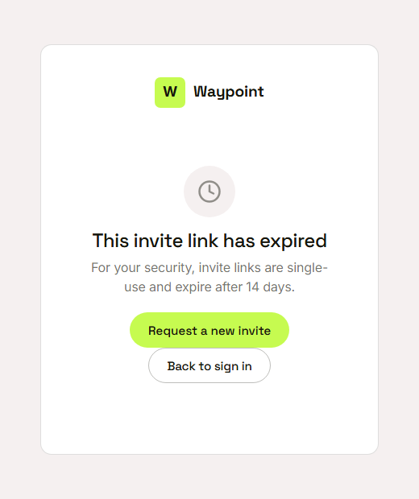
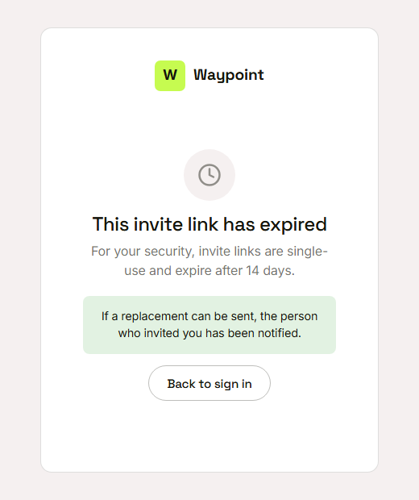

Waypoint · Video 094
Replacing an expired invitation
An old link, and a way to ask for a new one
This invite link has expired

Single use, and expires after fourteen days
Request a new invite

The same careful answer every time
Other link problems
Already used: sign in with the password you created
Cancelled: the invite is no longer active
Not valid: the page says so
Things to remember
Invite links are single use and expire after fourteen days
An expired link shows a plain page and a request button
The person who sent the invitation is notified
The page does not reveal whether a replacement can be sent